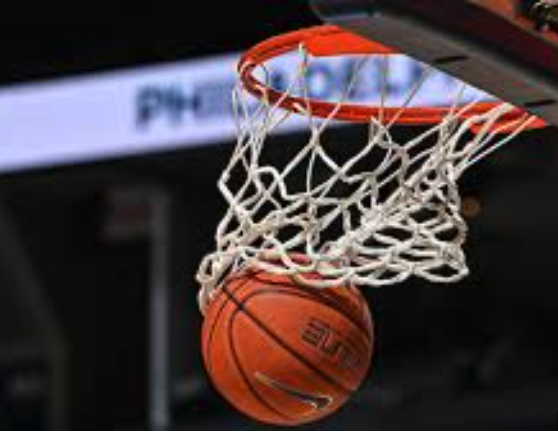
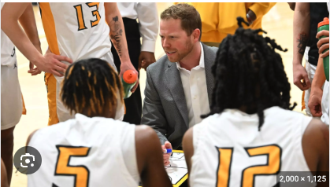
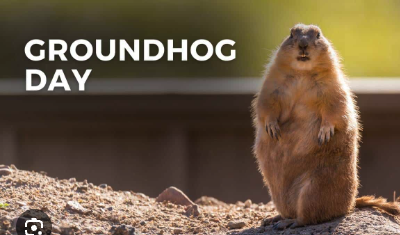

All About Zachary
Page 2
Why Am I Interested In Sports
Ever since I was young, I have had a strong interest in playing and watching sports.
I develop strategy in my head and think about the game in depth.
It helps keep me accountable about the things that I do and the work I put in.

Hobbies & Interests
-
Playing Basketball: I have always loved to play ball. I have fell in love with the grind and the work
and the practice that it takes to be great.
- Video Games: I enjoy passing time with friends on Xbox, laughing and having fun.
-
Hanging out with my Family: I enjoy hanging out with family, especially my mom. I play board games and
watch movies with her as well as sports games.
Future Goals
My dream is to get a college education and become a coach, preferably basketball but baseball is fine as
well.
I want to coach high school or college. Also, I want to raise great children and have a happy family.
Furthermore, I would coach my sons team until high school stay in touch with my mom and live
somewhere warm with a beach.

Fun Facts
- I was born on Groundhogs day, February 2nd.
-
I have 1 sister, Katelynn, 1 stepsister, Lauren, and 1 stepbrother, Noah. Out of all of my siblings, I
am the youngest.
- My stepdad was born in Taiwan but is full American as he was born there during a military mission.
